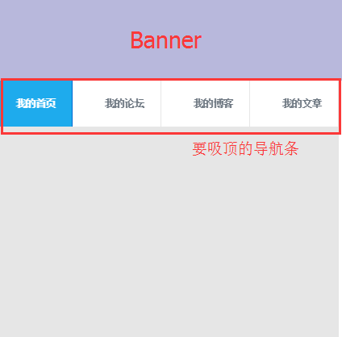

这两天做的项目都是些面向高端人士的，所以基本不考虑兼容，代码也写的风生水起的。
不过期间还是遇到了些许问题，比如吸顶效果的实现，“吸顶”是一种比较老的交互方式，在PC页面已经用了很多年了。
吸顶元素的初始位置一般靠近页面顶部，但与顶部有一定距离，这块区域放的是最醒目的元素，比如我的页面就像下面这样：

页面向下滚动超过吸顶元素初始位置时，把吸顶元素固定在顶部。。。
要求吸顶的元素一般是二级导航栏、搜索框、文章标题栏（ h1 ）、表头（ thead ）、tab条等等，共同特点是在内容或功能上比较重要，但又不是最重要的元素（最重要的元素通常固定在页面顶部， navbar-fixed-top ）
这种效果在pc端上靠scroll还是很容易实现的，其原理和”回到顶部”按钮是一样的~下面上代码：
1 | var offsetTop;//当前页面滚动的Y偏移值 |
但其实经常多次测试就会发现滚动到临界值tabh的时候页面会突然抖动(= =僵硬。。)我找了好久原因所在，最后发现是由于添加了top-fixed之后，原来的tabfixed出去了，下面的元素紧接着填满了原来的位置，所以才会抖动，那我们当然不想看见抖动啦，于是马上想到，那给加个占位符怎么样？
1 | var offsetTop;//当前页面滚动的Y偏移值 |
其实就是给tab即要吸顶的元素外层套上了个占位的外套，这样在内部tabfixed出去的时候，占位符还在原来的位置占位，页面当然就不抖抖抖啦。
不过由于我的页面前面是个懒加载的banner图片，所以在页面滚动的时候offsetTop参数有可能不准确，没把图片高度算进去，可以配合加上占位图片，当然，用min-height也可以，更简单，之后等图片加载进来的时候重新修正offsetTop参数即可。
前面讲了那么多，看起来已经无懈可击了。但是下面才是我真正要说的重点，上面的代码直接搬到移动端看似可行，Android 4.0+确实可以，但是我最近兼容的高版本IOS 8+完全行不通(其实ios基本全家阵亡)。
♥ Android的scroll事件
不那么实时（自带节流的感觉），但Android 4.1之后scroll件和PC几乎没什么区别。
只要页面还在滚动，scroll事件就疯狂触发，需要手动节流，这正是我们需要的效果。如果scroll本身自带节流，就很容易错过临界点判断，导致吸顶元素“跳一下”，体验不平滑。
♥ IOS的scroll事件
IOS 8-的Safari，包括UIWebView，对scroll事件做了很大限制：
手指划动屏幕 -> 滚动 -> 手指抬起 -> 惯性滚动 -> 停止滚动
整个过程，直到停止滚动时才会触发1次scroll事件， 也就是说 ，IOS 8以下的scroll变成了scrollend。监听滚动判断位置的方法完全失效，平滑吸顶效果变成了滚过临界位置直到停止滚动时，吸顶元素跳到目标位置， 体验奇葩到我焦头烂额。。。
scroll不能用，但还可以有一些奇怪的思路，比如定时器读scrollTop， touchmove ， iscroll 等等
定时器在手指没有离开屏幕时不会执行，touchmove 触发频率足够，也能拿到 scrollTop ，但 touchend 后， 惯性滚动期间 ，没有任何事件可用，拿不到这段的 scrollTop ，很难预测这段惯性滚动距离（减速运动），甚至不确定各IOS版本这段距离的计算方式是否相同
iscroll 这种假滚动，自然可以实时获取滚动位置， iscroll 还有一个专用版本来做这个事情：
iscroll-probe.js, probing the current scroll position is a demanding task, that’s why I decided to build a dedicated version for it. If you need to know the scrolling position at any given time, this is the iScroll for you. (I’m making some more tests, this might end up in the regular iscroll.js script, so keep an eye on it).
IOS 8+的Safari和WKWebView 能够疯狂触发 scroll，无论手指在不在屏幕上，无论是不是惯性滚动期间。但IOS 8+的 UIWebView ， scroll 限制还在，也就是我写的和ios端交互部分 吸顶效果 完全作废 TT A TT …
总的来说，如果想在IOS端实现吸顶效果，此路不通，忘掉 scroll。
♥ sticky
虽然 scroll 方案行不通，但IOS提供了另一种方式： position: sticky ，自IOS 6.1就支持了，最近Chrome56才支持。
这个CSS规则专门负责吸顶，一般用法：
1 | .sticky { |
没有滚过初始位置时，和 position: relative 表现类似（占据空间， !=static 能为后代元素提供定位参照），但 top 和 left 无效。
滚过初始位置时，和position: fixed表现类似，top和 left生效，固定在屏幕可见区域，但页面 不会抖动，原本占据的空间还在（自带守家占位符的感觉），吸顶效果非常平滑，比Androidscroll方案体验更平滑，但限制很明显， 无法实时获知吸顶状态，于此相关的各种效果都受限制，比如我前面那个效果图，滚动到“我的首页”的时候给 “我的首页”加特殊样式，滚动到“我的论坛”的时候给 “我的论坛”加特殊样式…
问题的关键就是IOS的sticky不由我们控制，且无法实时获知吸顶状态 ，想要获知吸顶状态的话，又回到了最初的问题，页面滚动过程中，怎样实时获知滚动条位置？CSS sticky 并 不能解决这个问题。
我目前还没有找到合适的解决方案，目前方案是牺牲tab浏览状态独立性，多tab共用 body 的滚动条，切换tab时滚回之前的位置。这样做避免了判断吸顶状态，但牺牲了tab列表无缝切换的完美体验。
♥ 总结：一般元素吸顶：Android用 scroll 方案，在效果可接受范围内手动节流，提升性能；IOS用CSS sticky ，如果不需要兼容IOS 8-以及任意版本 UIWebView 的话，也可以采用 scroll 方案。
吸顶tab列表：没有好的解决方案，暂用牺牲无缝切换的方案。
整页iScroll是一个冒险方案，页面复杂的话， 不要轻易尝试 ，即便页面不复杂，谁知道以后呢 = =毕竟我们的需求，永远都在改改改…
如果大家有什么好的解决办法或思路请分享给我 (つд⊂)伤心…
还有什么问题大家一起分享嗷嗷~联系方式就藏在博客哪篇文章里 (≧▽≦)/